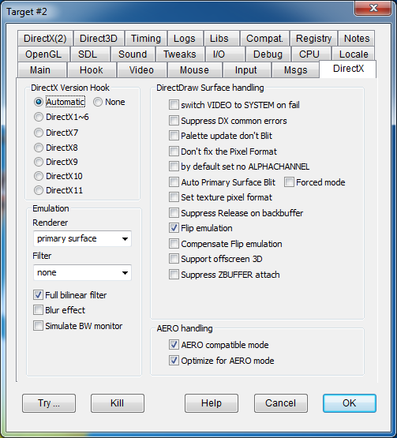

DirectX Version Hook: Sets the basic intervention strategy. DxWnd should use a different hooking technique depending on the game technology. Automatic mode tries to find the correct technique by itself, but it doesn't always succeed. OpenGL handling requires a dedicated setting (see OpenGL).
Available options:
Automatic
DirectX1~6
DirectX7
DirectX8
DirectX9
DirectX10
DirectX11
None
In "Automatic" (the default mode), DxWnd automatically detects DirectX calls and hooks them to track and modify the calls and their corresponding COM methods. In some cases, though, DxWnd is unable to properly detect these calls and the windowing effect can be recovered by explicitly telling DxWnd what version of DirectX it should hook. Each option corresponds to a different DLL file that is involved in the DirectX implementation. This is directed by the following options:
DirectX1~6 (for ddraw.dll)
DirecX7 (for ddrawex.dll)
DirectX8 (for d3d8.dll)
DirectX9 (for d3d9.dll)
DirectX10 (for ...)
DirectX11 (for ...)
The last two options are generally useless, since the current Direct3D10/11 implementation seems to be based on Direct3D9, so hooking DirectX9 works for them as well (however, the implementation may change in the future).
It is also possible to specify the option "none" to avoid hooking DirectX at all. This could be helpful whenever you are interested in DxWnd features that are not related to the graphics (e.g. time stretching, compatibility options) and you want to leave the graphics alone.
DirectX emulation determines how the fullscreen DirectX operations are managed to fit a windowed environment, with the following options:
|
None |
The primary surface and backbuffers are simply scaled to the desired size, but no other characteristic is altered. In particular, the pixel color depth and mode are not altered. |
|
Primary Buffer |
Same as "None," but blit operations are made against a memory surface and then transferred to the real primary surface – this handles the so-called "pitch-bug" problem. |
|
Locked Surface |
Same as "Primary Buffer" (EMULATEBUFFER) but the buffer is the surface of an OFFSCREENPLAIN DirectDraw surface, so it is handled similarly to a DirectX surfacebuffer. |
|
Primary Surface |
The virtual primary surface has a different color depth from the real primary surface, and DxWnd takes care of the color transformation internally: it might be a little slower but it involves no screen mode changes. Furthermore, this option allows you to set the "Set AERO compatible mode" that avoids making a temporary color conversion and stretching it to the primary surface (which would break the AERO desktop composition mode). |
|
Hybrid |
Similar to "Primary Surface" mode (EMULATESURFACE), but DxWnd forwards the palette and color conversion to GDI calls instead of managing them internally. It is usually less compatible than primary surface, but in some rare cases it may better at managing unusual color conversions. Try this option if the game works but the colors are wrong or the screen is black. |
|
GDI |
Similar to "Primary Surface" mode (EMULATESURFACE), but DxWnd forwards all the conversion between the virtual primary interface and the window surface instead of managing it internally. Because of recent optimizations to GDI that can now take advantage of hardware-accelerated functions, this mode is becoming particularly interesting, and the lack of extra service surfaces brings it closer to the original game schema. It is also quite respectful of AERO desktop modes. |
|
SDL |
Similar to "Primary Surface" mode (EMULATESURFACE), but DxWnd uses SDL functions to bring the emulated primary surface to screen |
|
SDL2 |
Same as SDL, but using the newer SDL2 library |
|
OpenGL |
Same as SDL, but using OpenGL functions. This is a new and experimental blitter, derived from Jari Komppa's ddhack tool, that transfers the ddraw blitted surface (typically the backbuffer) to an OpenGL texture and then move it to screen. The use of OpenGL texture brings the support of the GPU with better performances, quality and the possibility to add aditional features. |
Note that the chosen option only influences DirectDraw1 through DirectDraw7 interfaces. Interfaces with Direct3D8 and up (or OpenGL) are not affected by these options.
Note: not all emulation modes support filtering. In case the filtering is not supported, the listbox is grayed out and becomes inactive. When emulation mode is updated, it could be necessary to exit and enter the update panel again to reflect the activation change.
|
ddraw default |
The normal mode, where the primary surface is stretch-blitted to the window surface. |
|
Fast 2X Bilinear |
Activates a simplified filter that scales each pixel twice, interpolating the colors of adjacent pixels. The default window size is double the resolution of the virtual screen. If you choose a different size, the surface is scaled to fit into the client area, but this noticeably slows down the blit operation. |
|
HQ |
High quality, scales the surface 2X by interpolating the adjacent pixel colors. |
|
deinterlace |
When the filter detects even or odd full black lines, it replaces them with the line above. This eliminates the striped effect of old interlaced movies. |
|
interlace |
Opposite of deinterlace, it forcefully inserts even black lines to simulate a retro-gaming interlaced video. |
|
PIX |
Experimental, simply scales the pixels by 2X, 3X, or 4X without making any attempt to interpolate them. |
|
Scale2x |
Scaling algorithm meant to smooth the pixel lines by scaling 2X, 3X or 4X, used in AdvanceMAME program and by kind courtesy of A. Mazzoleni. Best fit for low-res and non aliased screens. |
|
Scale2k |
Same as Scale 2X but with better support for color transitions. |
|
Full Bilinear |
Activates a bilinear filter to scale the DirectDraw primary surface to the window client area. When this is used with GDI games, it activates GDI internal filtering for better scaling. |
|
Blur effect |
Currently implemented for the OpenGL renderer only, thanks to source code found in ddhack project. It simulates a partial persistency effect of past frames as visible in old LCD video monitors. |
|
Simulate BW monitor |
Activate a tweak in the palette handling that causes all colors to be replaced with the corresponding grayscale color. It works only on 8BPP palettized games or while emulating 16BPP on a 32BPP desktop. |
|
switch VIDEO to SYSTEM on fail |
VIDEOTOSYSTEMMEM |
When this option is set and a CreateSurface fails because of video memory shortage, DxWnd backs this up by creating the surface on memory. Oddly enough, some games expect to notice this by themselves and work correctly only when the option is NOT set. |
|
Suppress DX common errors |
SUPPRESSDXERRORS |
Some games running in windowed mode generate sporadic errors that wouldn't prevent the game to work, but terminate the application. This option makes directx methods return OK condition in such common cases. |
|
Palette update don't Blit |
NOPALETTEUPDATE |
Avoid executing a plit operation in case of palette update. This could be used to fix conflicts between GDI and ddraw palette updates. |
|
Don't fix the Pixel Format |
NOPIXELFORMAT |
Do not try to fix the surface pixel format. |
|
By default set no ALPHACHANNEL |
NOALPHACHANNEL |
By default, DirectDraw surfaces are created with alpha channel capability. This flag changes the default to create surfaces without alpha channel capability. |
|
Auto Primary Surface Blit |
AUTOREFRESH |
Some games ignore DirectDraw specifications, updating the memory address returned by the first DirectDrawSurface::Lock operation, avoiding the need to Unlock and Lock on every frame (the original version of Cossacks does this). On modern systems, these games display a black screen even though the image is refreshed on the virtual surfaces. This flag periodically refreshes the display while processing the Windows message queue, forcing the game to blit each updated frame to the screen. |
|
Forced mode |
INDEPENDENTREFRESH |
Same as Auto Primary Surface Blit, but uses a dedicated thread to manage situations where the game doesn't process the message queue (e.g., during intro movies). |
|
Set texture pixel format |
TEXTUREFORMAT |
Applies the virtual pixel format to texture surfaces that don't have an explicit DDSD_PIXELFORMAT attribute. |
|
Suppress Release on backbuffer |
SUPPRESSRELEASE |
This flag ensures that the DirectDraw backbuffer surface - a critical resource - will not be released in emulated modes, even if explicitly requested. |
|
Flip emulation |
FLIPEMULATION |
Enabled by default, this flag remaps the DirectDraw Flip method which isn't supported on windowed primary surfaces to a corresponding Blt (blit) operation. |
|
Compensate Flip emulation |
NOFLIPEMULATION |
By default, the Flip operation doesn't take into account the existing background. In several cases (mostly involving mouse cursor movement), this simplified method leaves trails on the screen. This option switches to a slower but more accurate method of Flip emulation that resolves this issue. For an example, see Examples > Robin Hood - The Legend of Sherwood. |
|
Support offscreen 3D |
OFFSCREENZBUFFER |
Allows the creation of a ZBUFFER surface in some conditions (Fixes Nightmare Creatures and Dungeon Keeper Direct3D[with "handle exceptions"]). |
|
Suppress ZBUFFER attach |
NOZBUFATTACH |
Pretend that the ZBUFFER surface is not attached to another surface even if this is the case. This may prevent Direct3D CreateSurface to return an error code (fixes "Silkolene Honda Motocross GP"). |
|
Set AERO compatible mode |
SETCOMPATIBILITY |
Forces the program to declare its compatibility with AERO desktop mode by invoking the DirectDraw SetAppCompatData call, suppressing the switch from AERO to standard desktop mode. Useful for Windows Vista to Windows 8. |
|
Optimize for AERO mode |
AEROBOOST |
Optimizes operations for the AERO environment. All stretching and color conversion operations are made on system memory surfaces, and then the final blit to screen doesn't break the AERO mode. |